Amanita muscaria
MykoWeb
Here in California, we find the subspecies 'Flavivolvata' of the famous A. muscaria.
With a typical amanita structure and bright red coloration, it is one of the most
recognizable mushrooms in our area. This fungus is edible, psychoactive, and toxic,
giving it a controversial reputation. It is common in the coastal mixed coniferous
forests in winter, and pops up from time to time in urban environments as well.
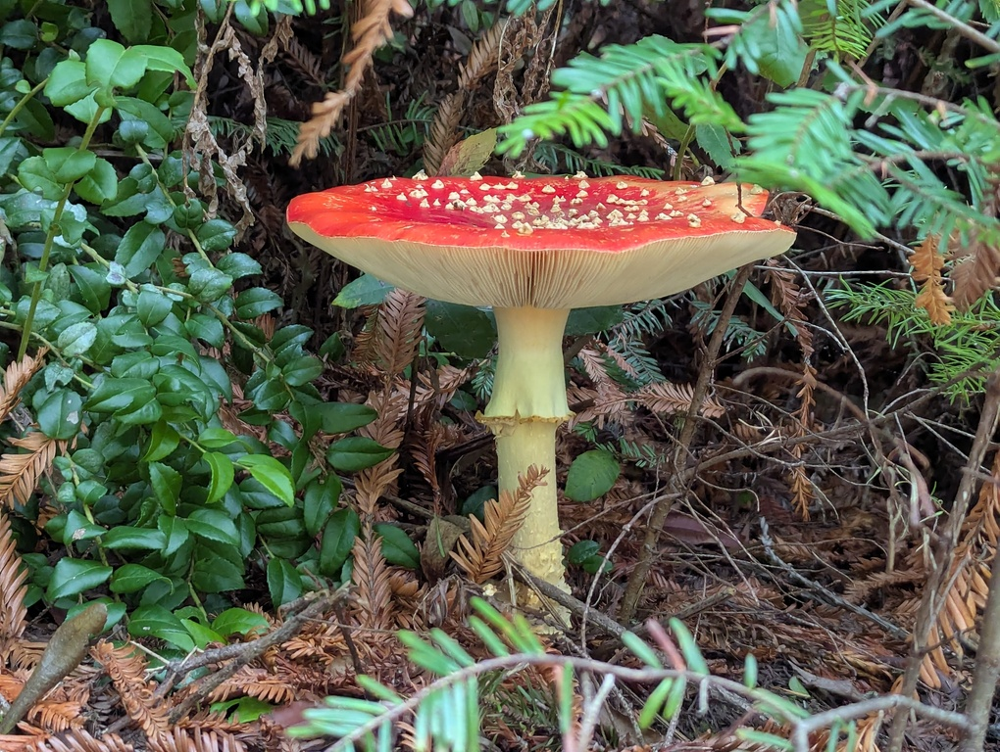
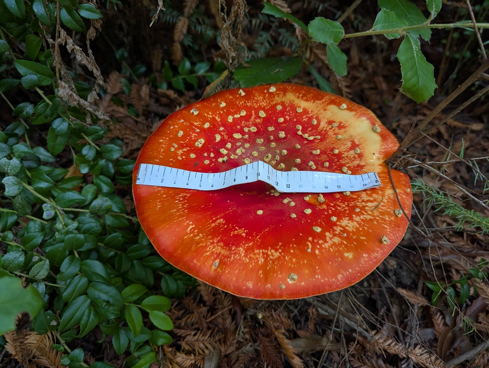
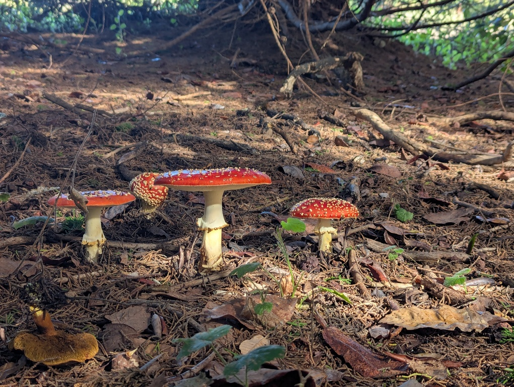
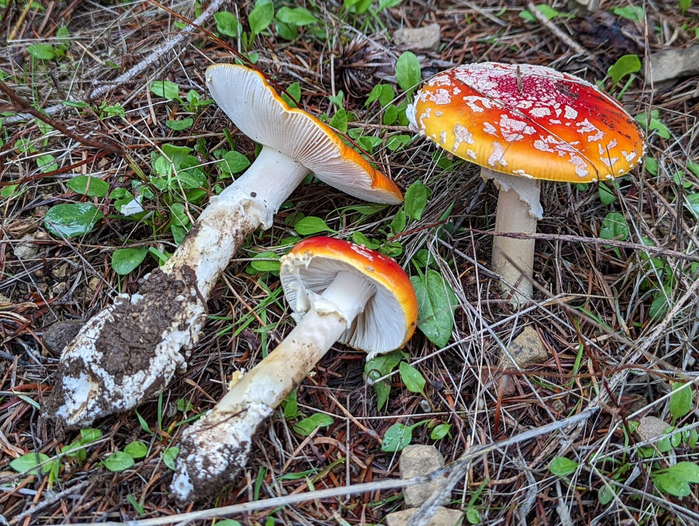
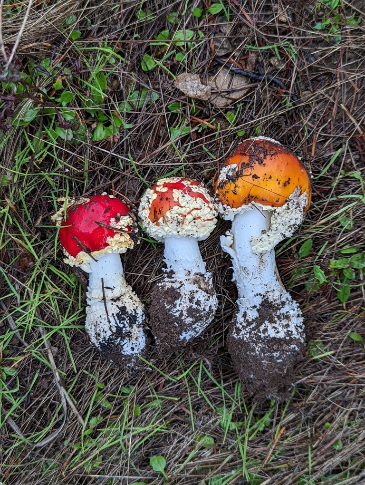
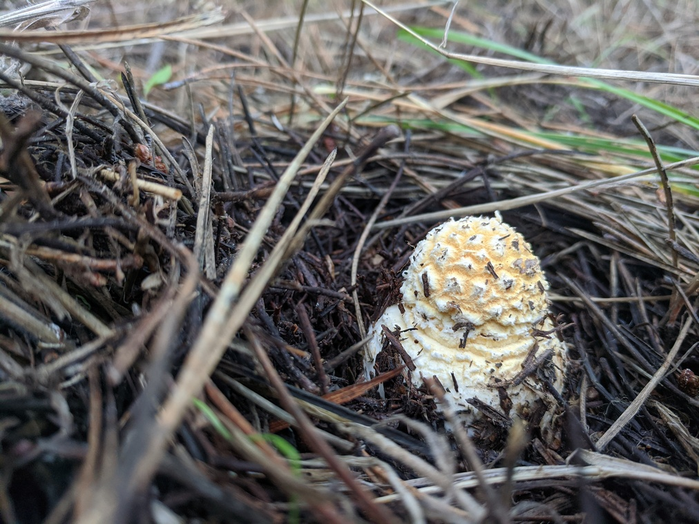
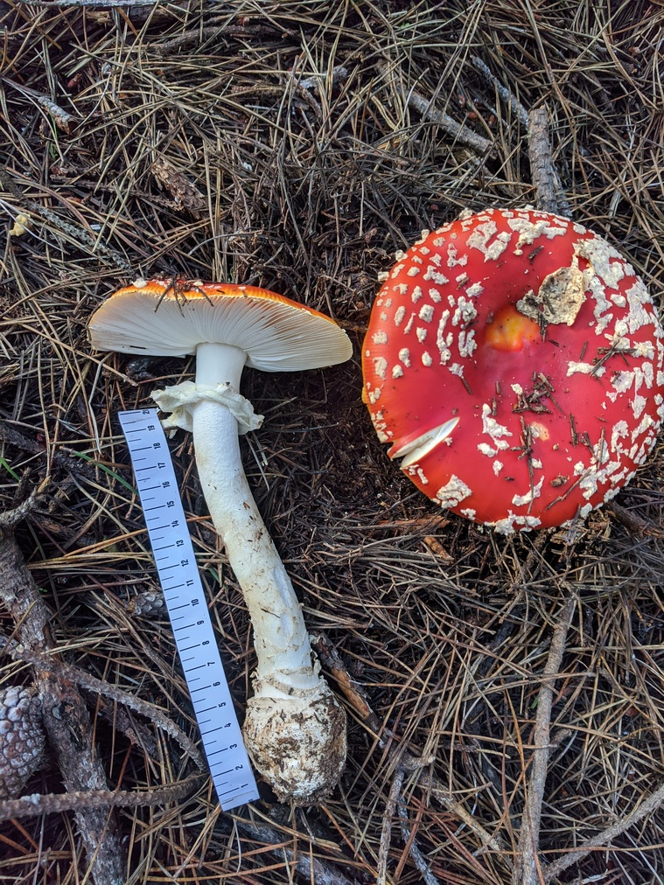
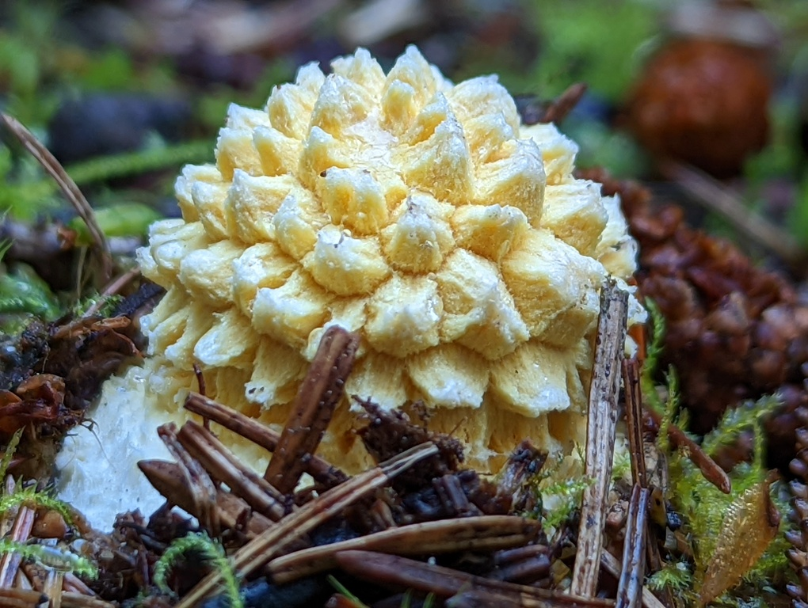
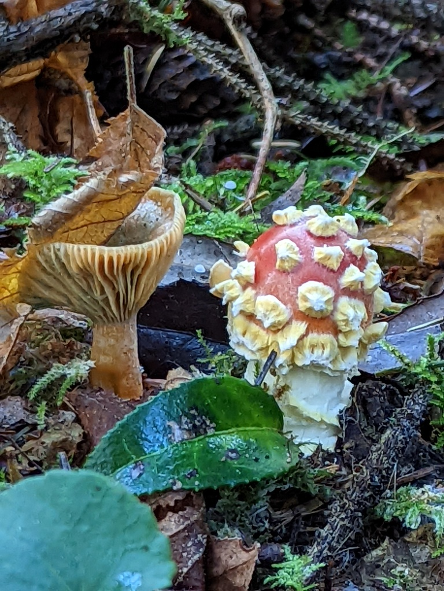
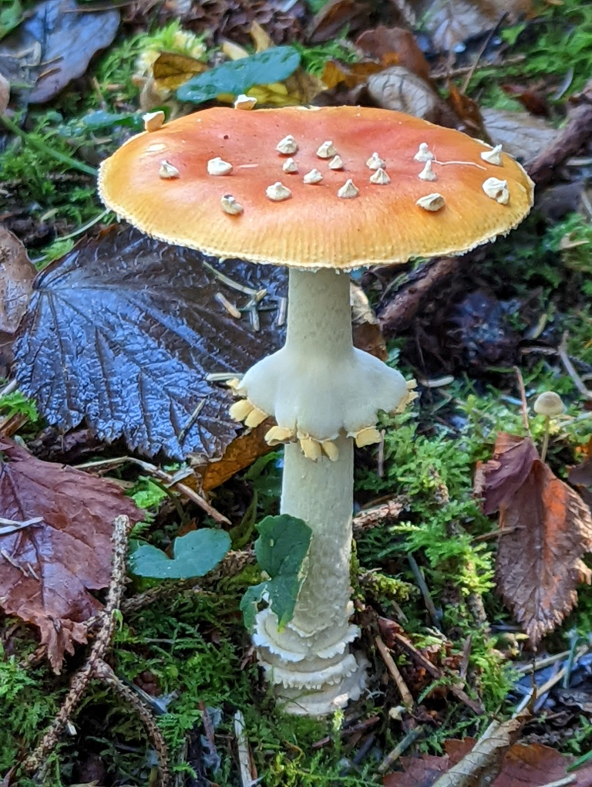
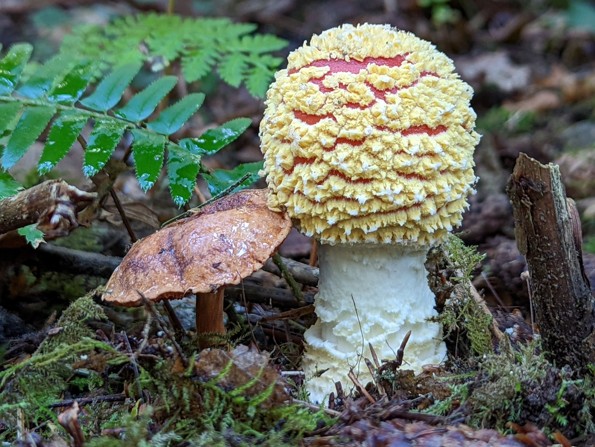